Print String
Wypisuje na ekranie tekst albo wartość zmiennej w trakcie działania gry. To najszybszy sposób, żeby sprawdzić, czy dany fragment Blueprinta się wykonuje.
Unreal Engine - materiały dla kursantów
Na dzisiejszych zajęciach uczymy się, jak wykrywać błędy w Blueprintach przez Print String, Breakpoint i Draw Debug. Sprawdzamy zależności oraz rozmiar assetów za pomocą Reference View i Size Map, poznajemy zasady SOLID oraz funkcje, a na koniec porównujemy trzy sposoby komunikacji między aktorami: interface, Event Dispatcher i Event Subsystem.
Debugowanie to sprawdzanie, co naprawdę dzieje się w grze. Zamiast zgadywać, możemy zatrzymać Blueprint, wypisać wartość zmiennej albo narysować pomocniczy kształt bezpośrednio w świecie gry.
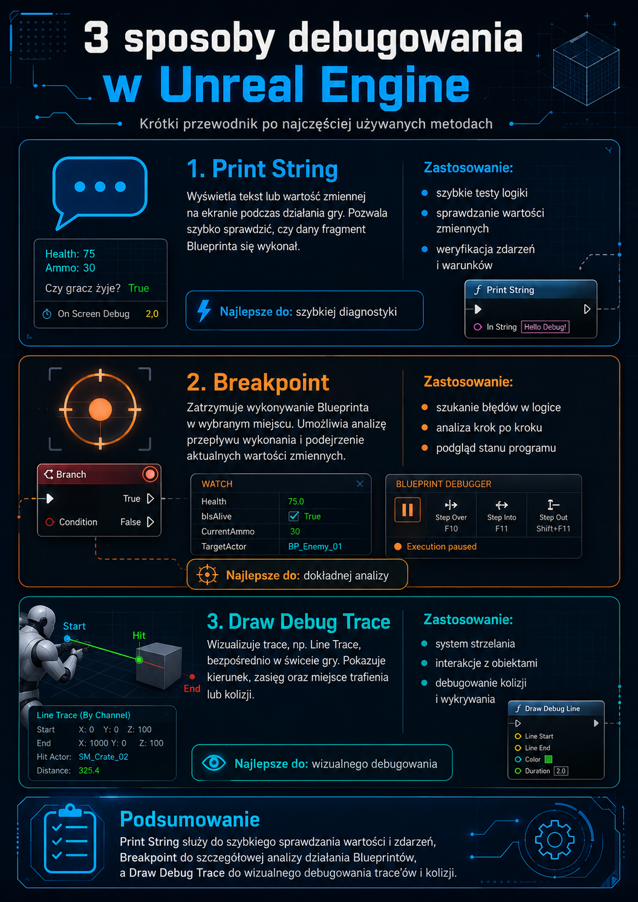
Wypisuje na ekranie tekst albo wartość zmiennej w trakcie działania gry. To najszybszy sposób, żeby sprawdzić, czy dany fragment Blueprinta się wykonuje.
Zatrzymuje wykonywanie Blueprinta w wybranym miejscu. Dzięki temu możemy przejść przez kod krok po kroku i podejrzeć aktualne wartości zmiennych.
Rysuje kształty w świecie gry, na przykład linię trace'a, miejsce trafienia albo zasięg ataku. To bardzo pomaga przy logice, której nie widać na zwykłym modelu.
Gdy testowy Print String działa co klatkę, warto opakować go w Do Once. Ekran nie zostanie wtedy zalany tą samą wiadomością.
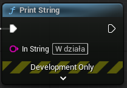
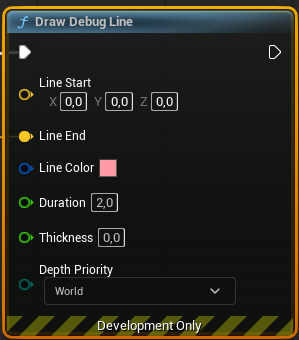
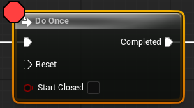
Optymalizacja zaczyna się od zrozumienia zależności. Reference View pokazuje, które assety są połączone, a Size Map pomaga zobaczyć, co naprawdę zajmuje miejsce w pamięci i na dysku.
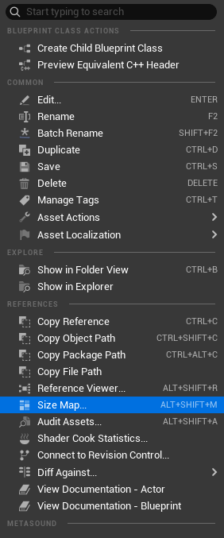
Reference View pokazuje zależności między assetami w projekcie. Dzięki niemu możemy sprawdzić, które obiekty korzystają z wybranego Blueprinta oraz jakie inne assety są potrzebne do jego działania.
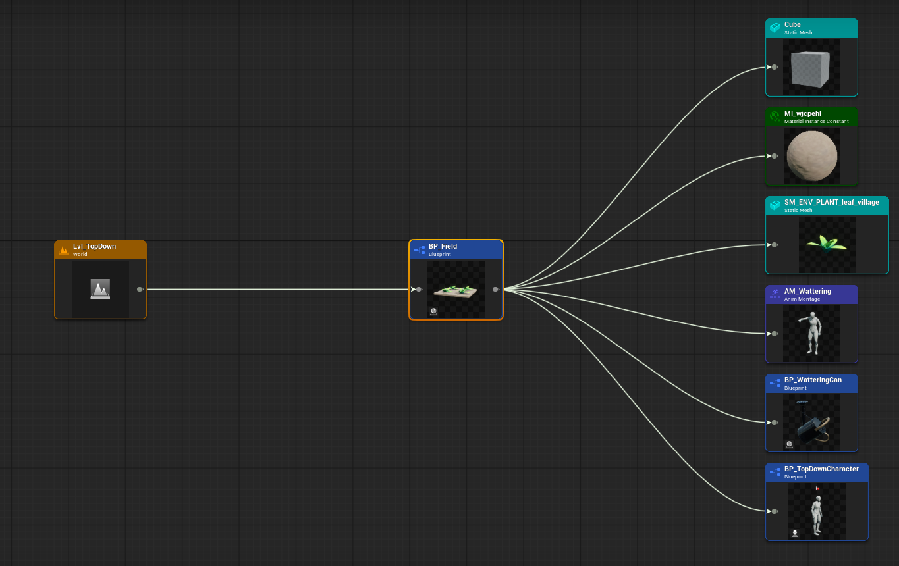
BP_TopDownCharacter jest potrzebny do działania
BP_Field. Taka zależność może przeszkadzać, gdy pole ma działać z różnymi typami postaci.
Size Map pokazuje, ile miejsca zajmuje wybrany asset razem z elementami, które są z nim powiązane. To przydatne narzędzie, gdy pozornie prosty Blueprint robi się ciężki dla pamięci lub dysku.
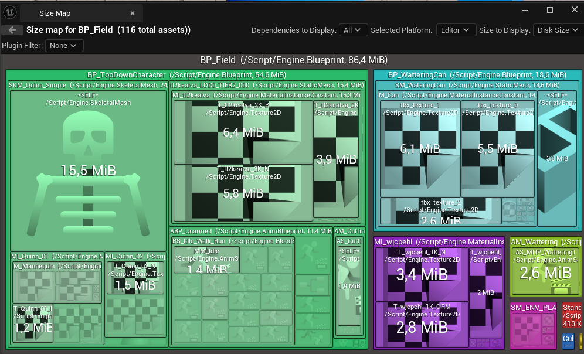
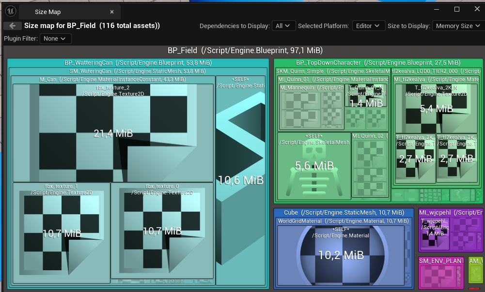
BP_TopDownCharacter. Jednym z powodów jest użycie
Cast To, które tworzy mocną zależność od konkretnej klasy.
Cast To nie jest zakazany. Problem zaczyna się wtedy, gdy przez cast wiele Blueprintów zaczyna
zależeć od jednej konkretnej klasy, chociaż potrzebują tylko jednej małej informacji albo akcji.
SOLID to pięć zasad, które pomagają budować Blueprinty tak, żeby łatwo było je zmieniać, naprawiać i wykorzystywać ponownie w innych miejscach projektu.
Każdy Blueprint albo funkcja powinny robić jedną rzecz i robić ją dobrze.
Powinniśmy móc dodawać nowe zachowania bez przerabiania istniejącego, działającego kodu.
Gdy tworzymy nową klasę z klasy bazowej, powinna działać wszędzie tam, gdzie program spodziewa się klasy
bazowej, na przykład Actor.
Lepiej mieć kilka małych, konkretnych interfejsów niż jeden ogromny, który wymusza implementowanie niepotrzebnych funkcji.
Lepiej polegać na ogólnym kontrakcie, na przykład interface, niż na konkretnej klasie Blueprinta.
W Unreal Engine widzieliśmy już, co się dzieje, gdy tych zasad nie stosujemy: BP_Field przez
Cast To mocno zależy od BP_TopDownCharacter, więc trudno go użyć bez tej konkretnej
postaci. SOLID podpowiada, żeby taką zależność zastąpić czymś bardziej ogólnym.
Funkcja to nazwany fragment kodu, który wykonuje jedno konkretne zadanie i można go wywołać w wielu miejscach. Dzięki temu Blueprint jest krótszy, czytelniejszy i łatwiejszy do poprawiania.
Dobra funkcja robi jedną rzecz, na przykład OpenDoor, TakeDamage albo
OnFieldInteract.
Jeśli logika jest w funkcji, poprawiamy ją w jednym miejscu zamiast szukać wielu skopiowanych node'ów.
Nazwa funkcji powinna mówić, co funkcja robi. To pomaga zrozumieć Blueprint nawet po kilku tygodniach.
Zmienne lokalne istnieją tylko na czas wykonywania funkcji, więc nie zaśmiecają zmiennych całego Blueprinta.
W Unreal Engine mamy trzy popularne sposoby komunikacji między aktorami: interface, Event Dispatcher i Event Subsystem. Każdy z nich pomaga zmniejszyć zależność między Blueprintami.
Działa jak wspólna umowa. Aktor może wywołać funkcję na innym obiekcie, jeśli ten obiekt implementuje
dany interface, bez robienia Cast To do konkretnej klasy.
Działa jak sygnał. Jeden aktor ogłasza, że coś się wydarzyło, a inne obiekty podpięte do tego eventu mogą zareagować.
To centralne miejsce do wysyłania i odbierania zdarzeń w większym systemie gry. Jest wygodne przy rozbudowanych projektach, ale wymaga przygotowania własnej implementacji w C++.
W tej lekcji skupiamy się na interface. To dobre rozwiązanie do interakcji typu: użyj, podnieś, otwórz albo zadaj obrażenia.
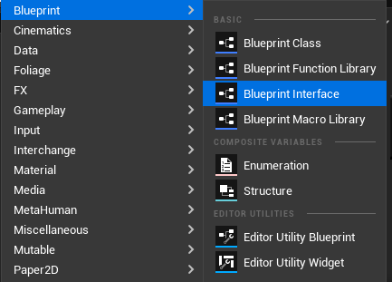
BPI_GardeningCertificate. Możemy potraktować go jak certyfikat ogrodnika:
aktor z tym interfejsem deklaruje, że potrafi wykonać konkretne akcje.
Do BPI_GardeningCertificate dodajemy funkcję OnFieldInteract. W interfejsie nie
wpisujemy zachowania tej funkcji. To tylko lista funkcji, które musi posiadać aktor korzystający z tego
interfejsu.
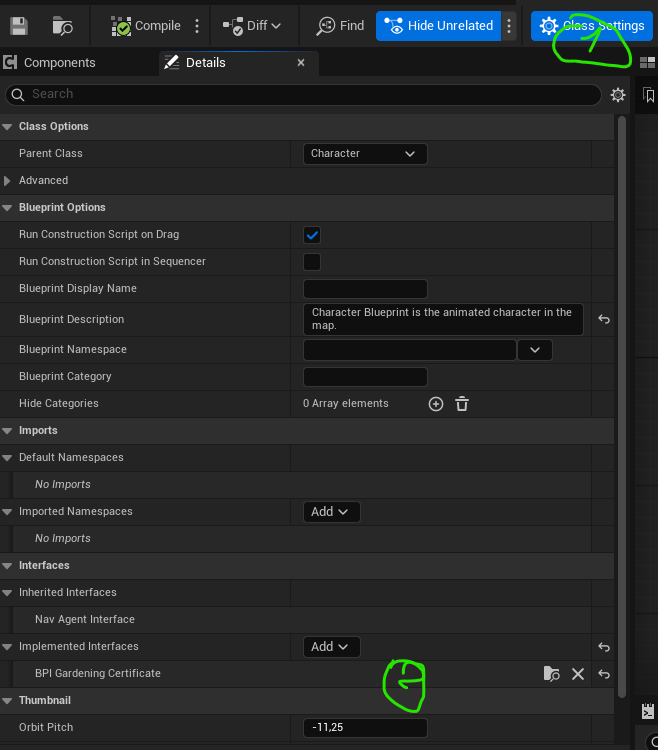
BP_TopDownCharacter.
Nie zmieniając zachowania, zmniejszyliśmy znacznie BP_Field i nie zwiększyliśmy
BP_TopDownCharacter. To dobry przykład optymalizacji przez mniejsze zależności, a nie przez
magiczne ustawienie w edytorze.
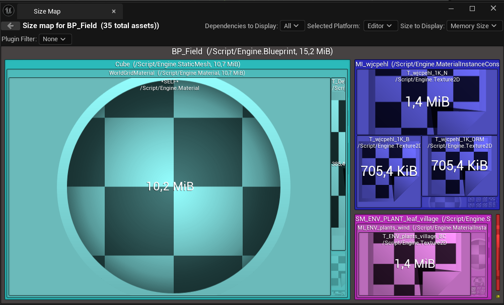
BP_Field jest lżejszy i łatwiejszy do ponownego użycia.
1. Do czego służy Print String?
2. Co robi Breakpoint?
3. Kiedy przydaje się Draw Debug?
4. Co pokazuje Reference View?
5. Co pokazuje Size Map?
6. Dlaczego zbyt dużo Cast To może być problemem?
7. Co oznacza zasada Single Responsibility?
8. Po co tworzymy funkcje?
9. Jak działa interface w Unreal Engine?
10. Czym różni się Event Dispatcher od interface?
Rozszerz nasz certyfikat ogrodnika o dodatkowe umiejętności.
BPI_GardeningCertificate nową funkcję, na przykład OnWateringCanInteract.BP_TopDownCharacter.